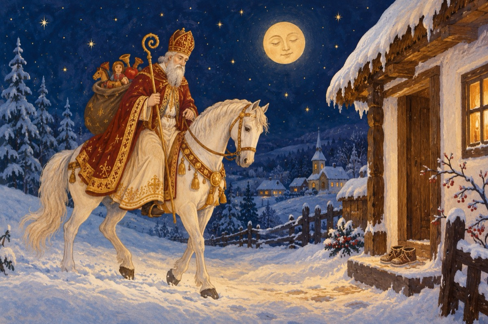

De sărbători - Moș Nicolae
Da, iată-ne-n ajun
De Sfântul Nicolae, copii
Moșul care-a plecat la drum
Să ne aducă dulciuri și jucării!
Ca să nu vină vreun mascat
Bucuria să ne-o deturneze
Moș Nicolae vine pe-un cal alb încălecat
Iar Moș Crăciun cu renii lui la sanie!
Când eram și eu copil atunci,
Puneam să fie încălțările la îndemână
Deznodând nojițele și gurguiul la opinci
Să-i fie moșului ușor ca darurile să le pună!
Bucuria noastră era ca și la voi acum, țineți minte
E sărbătoarea înainte de Moș Crăciun.
Primul ne pune daruri în încălțăminte
Iar celălalt, colo sub brad noi le găsim
Să fii copil, să fii copil poți și la bătrânețe
Bucuria nu are hotare.
Și tu copil și eu bunic ne dăm binețe
Sufletele noastre au aceeași sărbătoare.
Bucurați-vă copii, bunici, nepoți și părinți
C-am ajuns în prag de sărbători
Unde cu Dumnezeu suntem uniți
Și așteptăm la geamuri urători!
Vasile Groza